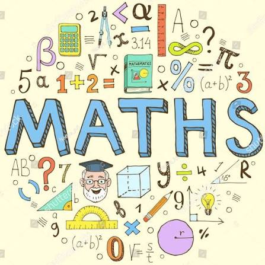

คณิตศาสตร์ (math)

วิชาคณิตศาสตร์ คือวิชาที่ศึกษาเกี่ยวกับจำนวน ตัวเลข โครงสร้าง รูปร่าง พื้นที่ และการเปลี่ยนแปลง โดยใช้ตรรกะ เหตุผล และสัญลักษณ์ในการแก้ปัญหา จุดเด่นและเนื้อหาหลักของวิชา การคำนวณและจำนวน: เรียนรู้เกี่ยวกับระบบจำนวน การบวก ลบ คูณ หาร และพีชคณิต เพื่อใช้แก้โจทย์ปัญหาในชีวิตประจำวัน เรขาคณิตและมิติ: ศึกษาเรื่องรูปร่าง มิติ มุม พื้นที่ และปริมาตร ช่วยพัฒนาความคิดเชิงมิติสัมพันธ์และการมองภาพ การคิดอย่างเป็นระบบ:ฝึกทักษะการคิดวิเคราะห์ การคิดเชิงตรรกะ และการแก้ปัญหาอย่างเป็นขั้นตอน การประยุกต์ใช้: เป็นพื้นฐานสำคัญในการต่อยอดไปยังวิชาอื่นๆ เช่น วิทยาศาสตร์ เทคโนโลยี การเงิน และการเขียนโปรแกรม